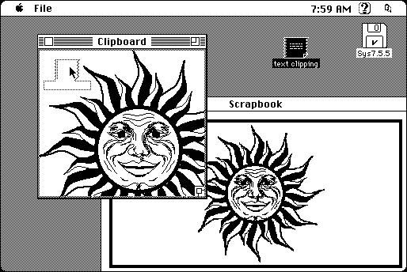

Download
ClipStation.zip (29K) ClipStation Z-1.1d3 repackaged into a zipped hfs disk image and checksum file. The disk image can be mounted with Mini vMac.
ClipStation.hqx (37K) ClipStation Z-1.1d3 in the original format.
copyright: Lawrence D’Oliveiro
mod date: Jun 24, 1997
license: freeware
from url :
LDO’s Software
A “bridge between the cool new Drag Manager and the old Clipboard. You can drag a clipping into its Clipboard window, then paste it into a non-drag-savvy application. Or conversely, you can copy an item to the Clipboard, then drag it out of ClipStation’s window to somewhere else.”
“Clippings” are a feature added in Macintosh System 7.5.

If you find these downloads useful, please consider helping the Gryphel Project, which hosts them.
Here are the md5 checksums for the downloads, signed with Gryphel Key 5:
--------- GRY SIGNED TEXT --------- c0d37a180d6c8c0fd2a719eab86435aa ClipStation.zip 1930a2e80331e9ecbd26257d7b8813ac ClipStation.hqx ------- BEGIN GRY SIGNATURE ------- Gry/4Xa8CFcUzxdN/H2M8YvsFRNZLZZSmkzifYUXHeE+08iv4ox+8Kp+hdP3Sem4 PV4cEH4WfIkDelXyGKVOW6HTOiYA5od1AZ6F4gO05n+NE2pkaPV5sszyKs6i3DTf RnZC0n+oQ3M6dkaGfwYs61vrF5zeCm6bdkFwn4FA4J8UfuGkvp6N7+QqBvthvy2p -------- END GRY SIGNATURE --------